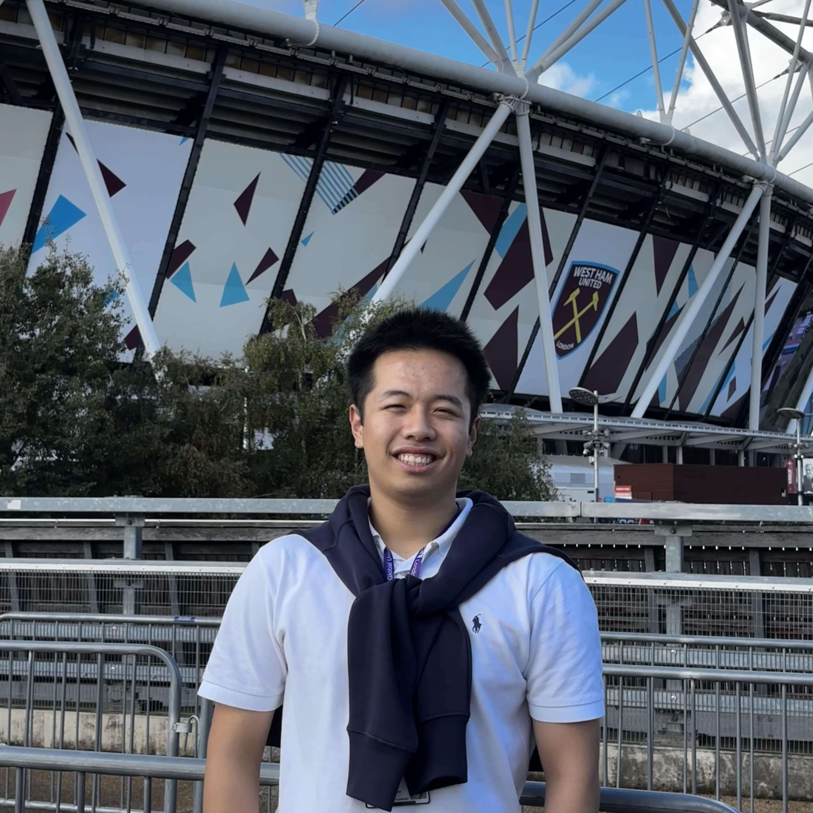
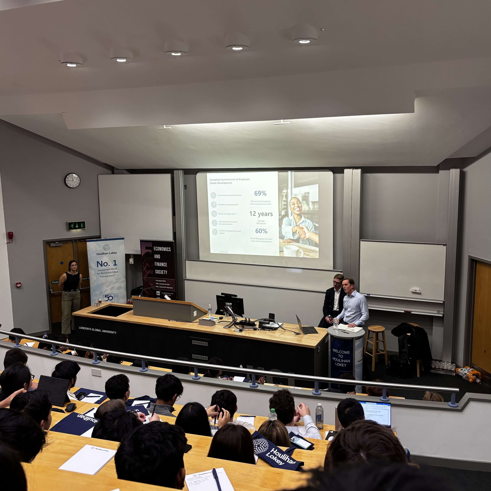
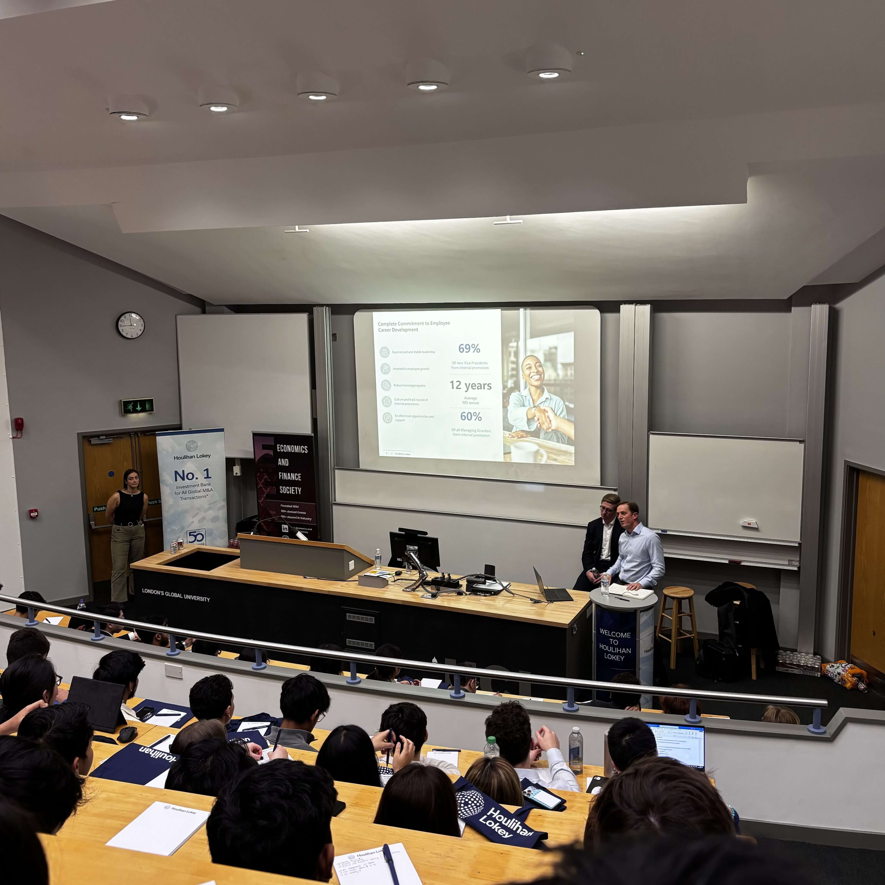

- Passionate Information Management for Business student at University College London interested in leveraging data and technology to optimise business strategies and operations.
- Demonstrated teamwork and leadership in academic and extracurricular activities, focusing on innovation and collaboration.
- Excited to apply an analytical and proactive approach to a dynamic technology spring insight programme.

Frank Dong
Undergraduate Student
- frank.dong.24@ucl.ac.uk
- https://www.ucl.ac.uk/~zceifjw/
- +44 7555 590987
Profile
Education
University College London, London, UK
BSc Information Management for Business (IMB) | Expected Jul 2027
- Leveraged Tableau and other analytics tools from Business Intelligence alongside strategic frameworks from Foundations of Management to enhance project decision-making by 50%.
- Engaged in Data Science, Economics & Finance, and Investment Societies, participating in events and workshops to strengthen data analysis skills and economic knowledge.
- Pursuing the Securities and Education Certificate and Santander Open Academy's "Excel - From Basics to Intermediate" course to deepen financial expertise.
 

Midleton College, Cork, Ireland
Leaving Certficate | Sep 2018 - Dec 2024
- Co-founded the Code Club and reached top 25 in the All-Ireland Programming Olympiad, developing leadership, problem-solving and technical abilities.
- Spearheaded initiatives as Student Council Chairperson, boosting student engagement by 20%.
- Organised and led school-wide events as Head Boy, with attendance exceeding 300 students and staff at each event.
Professional Experience
Data Analyst Intern
Stryker Corporation, Cork, Ireland | Feb 2022
- Developed a data analysis application using Microsoft Power BI during a one-week internship, improving the team's ability to understand crucial KPIs relating to manufacturing.
- Visualised a dataset of over 1,000 records to gain key insights, resulting in better-informed decision-making.
- Communicated results to three manufacturing managers via a written report and presentation, providing actionable recommendations based on preliminary research.

Store Supervisor
Apache Pizza Glanmire, Cork, Ireland | Aug 2021 - Aug 2024
- Planned and exceeded monthly sales targets by 10% through strategic promotions.
- Implemented equipment organisation methods, resulting in a 25% decrease in stock discrepancies.
- Recruited five new employees, improving team efficiency and cutting onboarding time by 20%.

Extracurriculars
Recreational Tennis
UCL Tennis Club | Sep 2024 - Present
Cultivating discipline, strategic thinking, and teamwork via frequent practice and competitions
Volunteer Technical Mentor
CoderDojo Cork | Sep 2022 - Jun 2023
Mentored young students at CoderDojo, teaching coding skills while developing communication abilities.
Competitive Debating
Midleton College | Sep 2022 - Jun 2023
Competed in tournaments, refining public speaking abilities while presenting concise arguments under pressure.
Skills
- Professinal Skills: Communication, leadership, teamwork, critical thinking, time management
- Technical Skills: Python, C++, Tableau, Power BI, Microsoft Office Suite, web development
- Languages: English, Chinese, Spanish, Irish